Prenájom · Komerčné priestory
Prenájom obchodných priestorov v OC RETRO, Bratislava - Ružinov
Ružinov, Bratislava
Cena na vyžádání
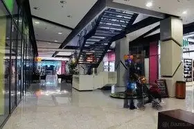
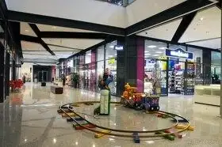
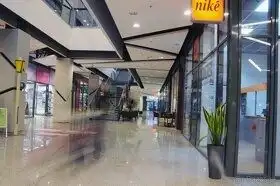
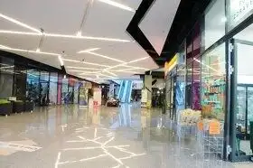
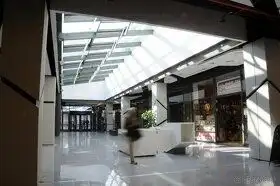
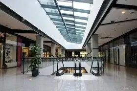
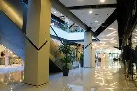
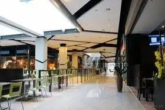
- Plocha108 m²
- StavNovostavba
- VlastníctvoOsobné
O nehnuteľnosti
V polyfunkčnom objekte RETRO, Nevädzová ul., Bratislava - Ružinov ponúkame na prenájom obchodné priestoryCharakteristika priestorov:Výmera obchodnej prevádzky: 120 m2Obchodné podmienky:Nájomné: 10 €/m2/mesiac + DPHPreddavok na spoločné prevádzkové náklady: 9,4 EUR/ m2/mesiac + DPHPreddavok na teplo: 1,9 EUR/ m2/mesiac + DPHPlus priame náklady (elektrina, internet)Kaucia: dvojmesačné nájomné s DPHÚprava priestorov – na náklady nájomcu.Bonusy – osobné rokovanie.Kontakt: W.O.S. reality, s.r.o., Mraziarenská 6, Bratislava, RNDr. Jana Šajgalíková, 0903 724 375, sajgalikova@wosreality.sk
Parametre
- Druh
- Obchodné priestory
- Dátum zverejnenia
- 23. 02. 2023
- Energetický certifikát budovy
- nie je
- Energie
- 1661
- Rok výstavby
- 2008
- Stav nehnuteľnosti
- Novostavba
- Typ
- Prenájom
- Typ konštrukcie
- Železobetónová
- Vlastníctvo
- Osobné
- Úžitková plocha
- 108 m²
Kde to je


Ďalšie ponuky
Celá ponukaMohlo by Vás zaujímať
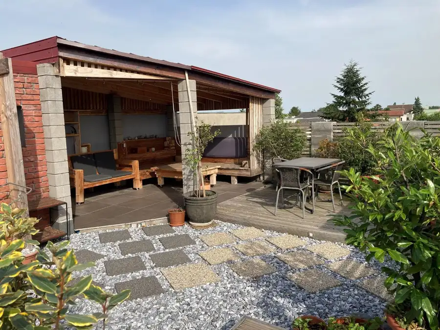
DomNové 299 000 €Útulný rodinný dom so strešnou terasou vo Vajnoroch – exkluzívne u nás, volajte 0903 724 375 Vajnory, Bratislava 140 m²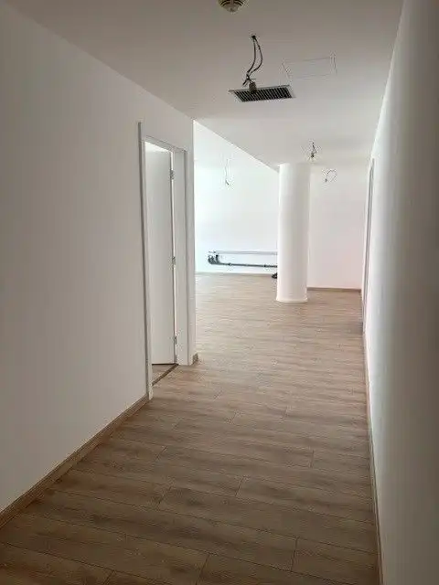
Komerčné priestoryNové Cena na vyžádáníZaujímavý nebytový priestor v OCTOPUSE, Ružinov Ružinov, Bratislava 77.46 m²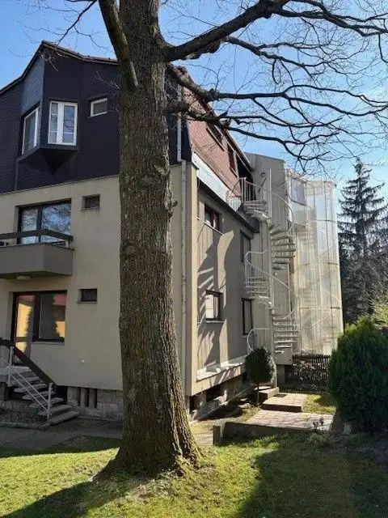
DomNové Cena na vyžádáníBývajte v hlavnom meste Slovenska a pritom v lese! Karlova Ves, Bratislava 258.3 m²